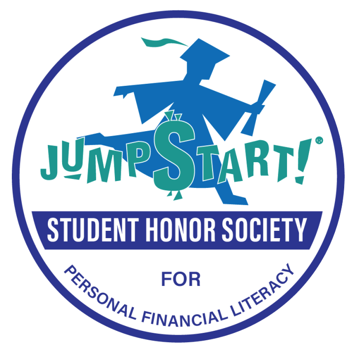

Member
Jump$tart Student Honor Society for Personal Financial Literacy
Recognized as one of the first students inducted into the Jump$tart Student Honor Society for Personal Financial Literacy, a national recognition program celebrating students who demonstrate strong financial knowledge and a commitment to promoting financial literacy. As part of the Honor Society's inaugural group of members, Maria was recognized for her efforts to inspire others to make informed financial decisions and use financial education to create a positive impact in their communities.